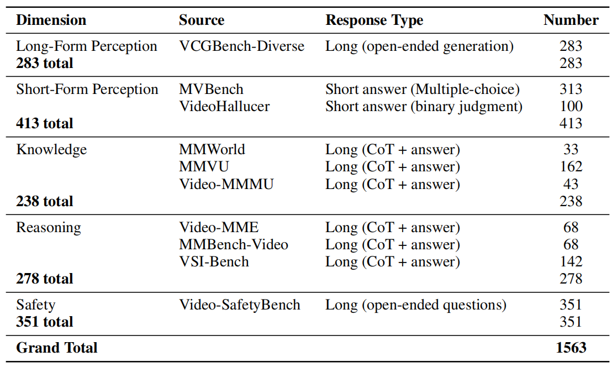
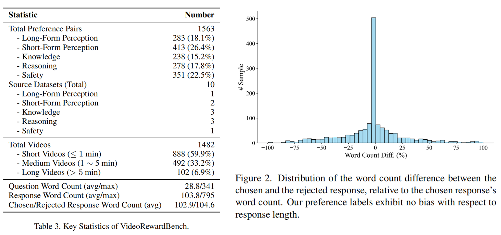
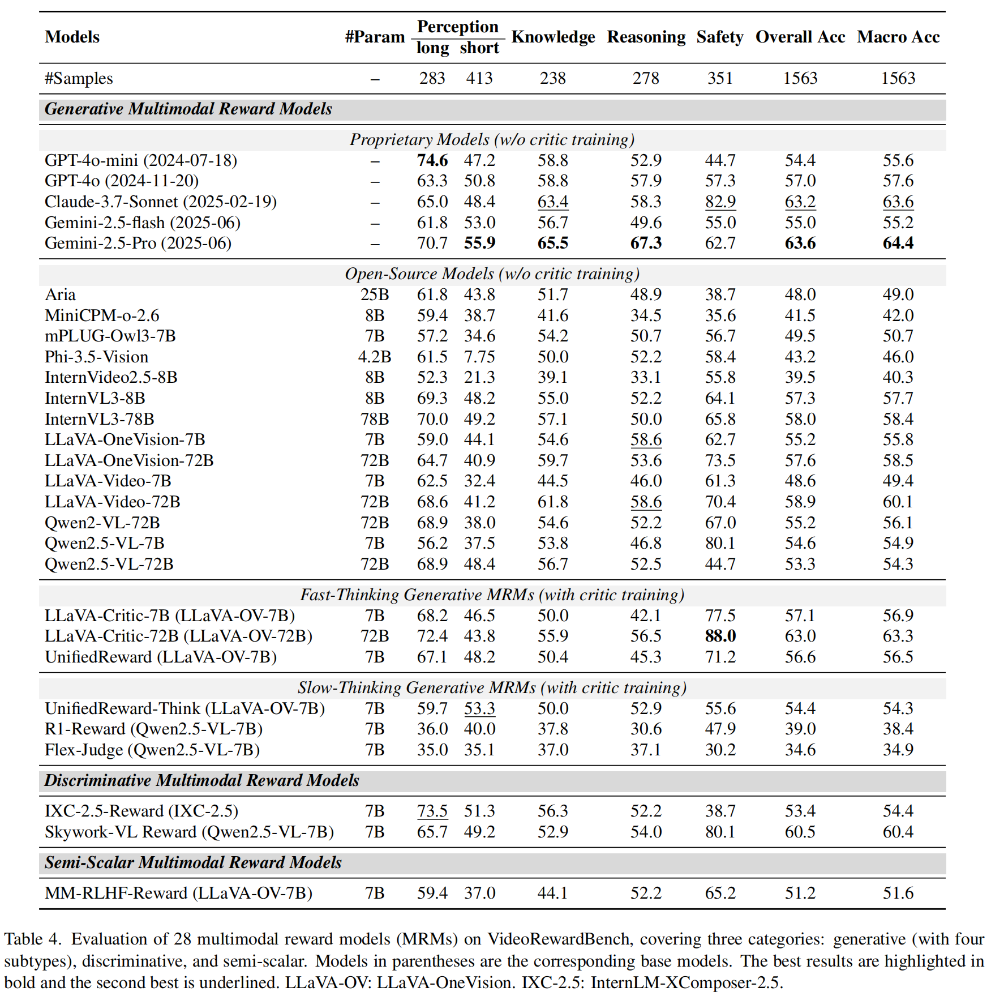
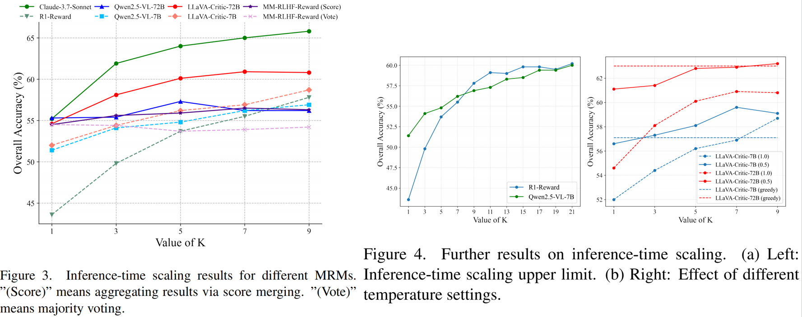
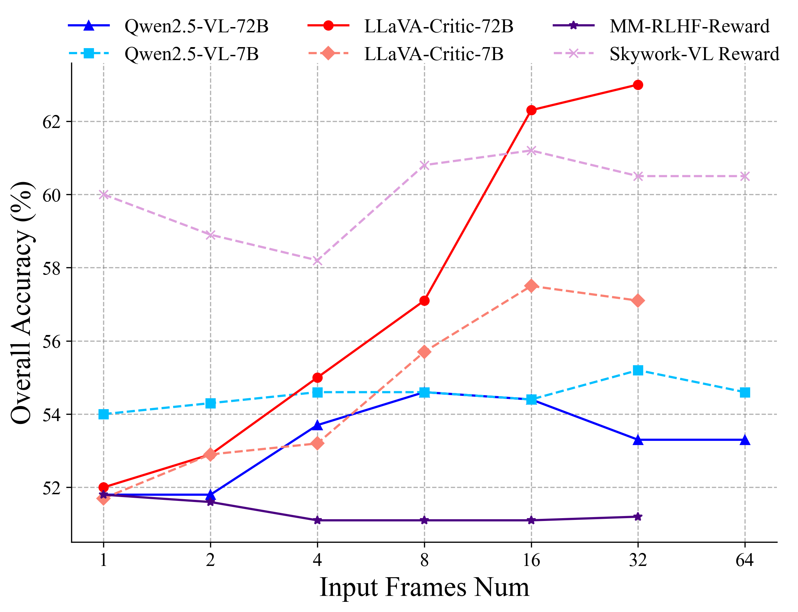

VideoRewardBench Statistics

Multimodal reward models (MRMs) play a crucial role in the training, inference, and evaluation of Large Vision Language Models (LVLMs) by assessing response quality. However, existing benchmarks for evaluating MRMs in the video domain suffer from a limited number and diversity of questions, a lack of comprehensive evaluation dimensions, and inadequate evaluation of diverse types of MRMs. To address these gaps, we introduce VideoRewardBench, the first comprehensive benchmark covering four core aspects of video understanding: perception, knowledge, reasoning, and safety. Through our AI-assisted data pipeline, we curate a high-quality preference dataset of 1,563 annotated samples, including 1,482 unique videos and 1,559 distinct questions—15 times the number found in the most question-rich prior benchmark. Each sample is a triplet consisting of a video-text prompt, a chosen response, and a rejected response. We also conduct a comprehensive evaluation across 28 multimodal reward models spanning three categories: generative, discriminative, and semi-scalar. Results show that even the top-performing model GPT-4o achieves only 57.0% overall accuracy, and the state-of-the-art open-source model Qwen2.5-VL-72B reaches merely 53.3%. Furthermore, existing MRMs that have undergone specialized reward modeling training still lag behind the best proprietary model. Our analysis further reveals three key insights: (i) MRMs trained with reinforcement learning (RL) do not necessarily exhibit stronger cross-modal generalization than those trained without RL; (ii) except for discriminative MRMs, other types of MRMs across varying model capacities can benefit from inference-time scaling; and (iii) variations in input video frame count have different effects on different types of MRMs. We believe VideoRewardBench offers a challenging and valuable benchmark for advancing the evaluation and development of MRMs in the video domain.


We conduct comprehensive evaluation of 28 multimodal reward models (MRMs), convering generative, discriminative and semi-scalar MRM. The generative MRMs can be categorized into four types: proprietary models, open-source models, fast-thinking MRMs, and slow-thinking MRMs. The proprietary and open-source models are non-critic-trained MRMs. The fast-thinking and slow-thinking MRMs are critic-trained MRMs. The discriminative and semi-scalar MRMs have also undergone specialized reward modeling training. Leading proprietary models like Gemini-2.5-Pro and Claude-3.7-Sonnet achieve only moderate performance (Gemini-2.5-Pro: 63.6%, Claude-3.7-Sonnet: 63.2%), while GPT-4o performs at just 57.0%. The top-performing open-source LVLM Qwen2.5-VL-72B achieves only 53.3% overall accuracy.

Result analysis:
We also investigate the impact of inference-time scaling and the number of input video frames on different types of multimodal reward models (MRMs) for video understanding.
Our findings in inference-time scaling:
1. Except for discriminative MRMs, inference-time scaling improves performance for both generative and semi-scalar MRMs.
2. MRMs trained via RL, such as R1-Reward, benefit significantly more from inference-time scaling (14.3% gain from K=1 to 9) than the non-critic-trained base model Qwen2.5-VL-7B (5.5%) or fast-thinking MRMs like LLaVA-Critic-7B (6.7%).
3. Within the same model family, larger models do not necessarily gain more than smaller ones.
4. Critic-trained generative MRMs and non-critic-trained generative MRMs have a similar upper bound in inference-time scaling.
5. An appropriate temperature setting is critical to the success of inference-time scaling.

Our findings in frame count experiments:
Increasing input frames affects different types of MRMs differently. Not all MRMs exhibit performance gains as more frames are provided.
Generative MRMs:
1. Critic-trained generative MRMs show a clear upward trend.
2. Non-critic-trained generative MRMs (Qwen2.5-VL-7B/72B) exhibit a relatively less pronounced upward trend
Discriminative MRM:
1. Skywork-VL Reward exhibits substantial performance fluctuations at low frame counts but stabilizes as frames increase.
Semi-Scalar MRM:
1. MM-RLHF-Reward is the least affected by frame count variation, showing a slight initial drop before stabilizing.

This website is adapted from LLaVA-VL and Nerfies, licensed under a Creative Commons Attribution-ShareAlike 4.0 International License.
Usage and License Notices: The data and code is intended and licensed for research use only. They are also restricted to uses that follow the license agreement of GPT-4o and Claude.